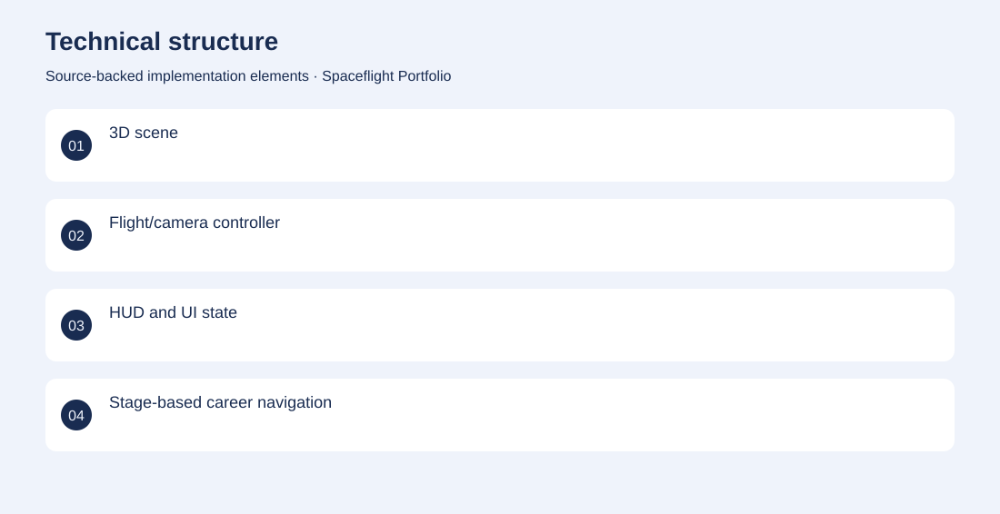
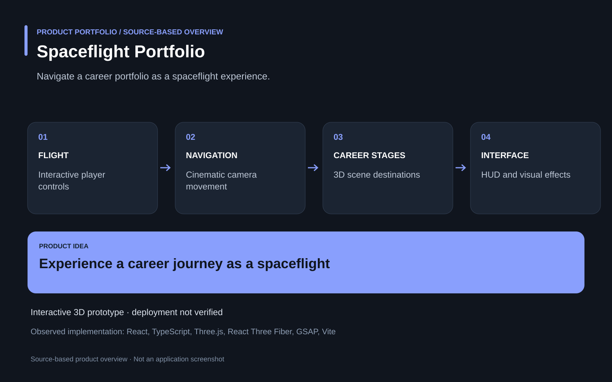

The project
A conventional portfolio can make a broad development history feel static and disconnected. An interactive 3D scene turns navigation into a spaceflight journey with cinematic camera movement, a player, stage objects and a heads-up display. Developed the React Three Fiber experience, navigation and camera systems, visual effects and portfolio interface. Implemented interactive prototype; current public deployment is not verified.
The problem
A conventional portfolio can make a broad development history feel static and disconnected.
The solution
An interactive 3D scene turns navigation into a spaceflight journey with cinematic camera movement, a player, stage objects and a heads-up display.
My contribution
Developed the React Three Fiber experience, navigation and camera systems, visual effects and portfolio interface.
Technical structure

Product overview

The portfolio cover is an editorial illustration. No live product screenshot is presented for this project.
Showcase assets
{kind=link}
{kind=link}
{kind=link}
New portfolio identity. Newly designed marks are portfolio treatments, not claims of official client branding.